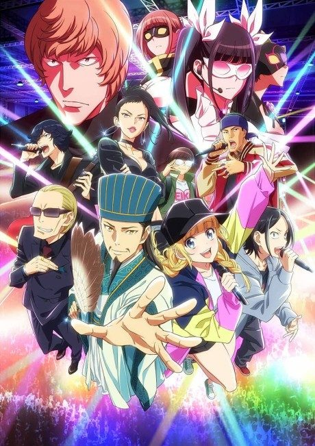

TRILLION GAME
トリリオンゲーム
Haru, a charismatic talker, and Gaku, a shy computer genius, set out to make a trillion dollars.
After the anime, read the manga from Chapter 52.
7.2AniList score
—Animeter, no votes yet
26episodes
Rate it or report where you stopped
Is it worth pushing through?
Built from what visitors report across all 26 episodes.
Loading reports…Checking what other people said about this one.
Sign in above with your email to add your report.
More like TRILLION GAME
 Original8.1
Original8.1
 Manga Ch. 1357.8
Manga Ch. 1357.8
 Unclear8.3
Unclear8.3
 Unclear7.1
Unclear7.1
 Original7.4
Original7.4
 Unclear7.1
Unclear7.1
 VN8.9
VN8.9
 Manga Ch. 618.1
Manga Ch. 618.1

Manga Ch. 297.9 Done7.4
Done7.4
 Unclear7.6
Unclear7.6
 Unclear7.5
Unclear7.5